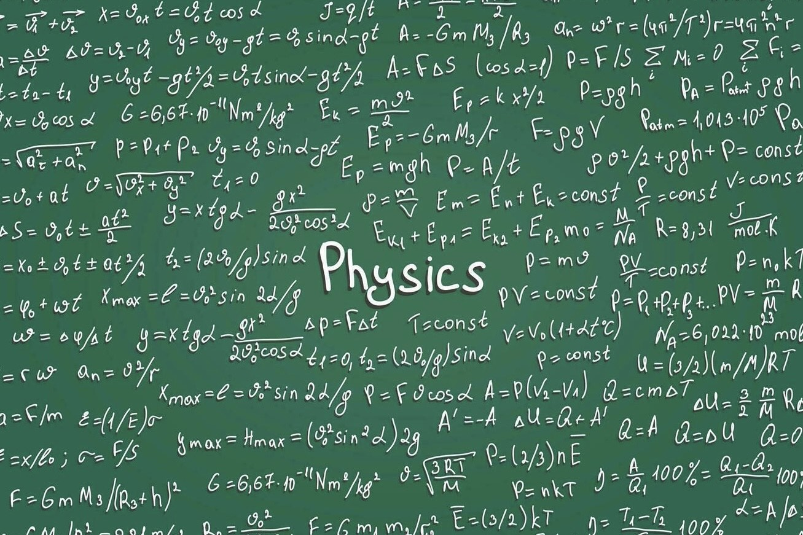
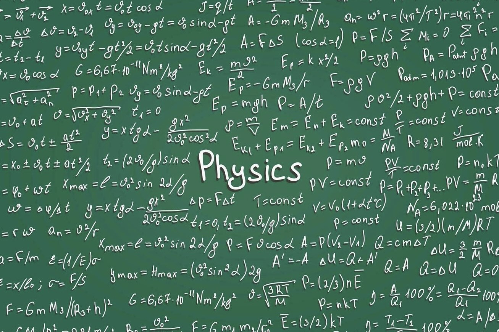

مرحباً بكم في متعة الفيزياء!
اكتشفوا عالم الفيزياء المذهل من خلال دروس تفاعلية، أنشطة ممتعة، ورسوم متحركة.
اكتشفوا عالم الفيزياء المذهل من خلال دروس تفاعلية، أنشطة ممتعة، ورسوم متحركة.
قوانين نيوتن الثلاثة تشكل أساس دراسة الحركة. تعالوا نتعلم كيف تؤثر هذه القوانين في كل شيء من السيارة التي نقودها إلى القمر الذي يدور حول الأرض.
الطاقة لا تفنى ولا تستحدث من العدم، بل تتحول من شكل لآخر. في هذه القسم، ستتعلم عن الأنواع المختلفة من الطاقة، مثل الطاقة الحركية والحرارية والكهربائية، وكيفية تحولها.
الموجات هي اضطرابات تنتقل عبر الوسط، سواء كان ذلك هواءً أو ماءً أو حتى فراغ الفضاء. في هذه القسم، ستتعلم عن أنواع الموجات المختلفة مثل الموجات الطولية والمستعرضة.